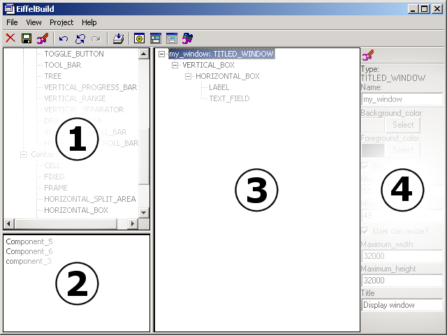

EiffelBuild Tour
EiffelBuild is a standalone application which is launched externally from EiffelStudio.
EiffelBuild notions
There are some notations that you will need to familiarise yourself with in order to understand this documentation. The notions are specific to EiffelBuild and are as follows:
- Object - In EiffelBuild, an object is a representation of a vision2 widget and all its properties, including all its children and their respective properties.
- Component - Is a representation of an object. From a single component, you can make several EiffelBuild objects. You can consider a component to be a template for an EiffelBuild object.
What does it look like?

The image above is a screenshot of EiffelBuild during the development of a project. The numbered areas are as follows:
- Type Selector - This tool allows you to select the supported Vision2 widgets.
- Component Tool - This tool provides facilites for building custom components for use within your projects. Picking an object from the Layout Constructor and dropping in here will cause a new component to be created which is a representation of the object, all its children and their properties. When you wish to use this component in the project you are developing, just pick it and drop it back into the Layout Constructor on an object that will accept a new child.
- Layout Constructor - This contains a representation of the system you are developing. Pick
a Vision2 type and drop it on an object within this tool, to create a new object of the type you picked parented in the object that you dropped on.
- Docked Object Editor - This allows you to edit the properties of a widget. This object editor is considered "docked" and the currently selected object in the Layout Constructor will automatically be targeted to this editor. As you edit a property in the editor, all current representations of that object in EiffelBuild will be updated to reflect this name. An example of this is when you edit the text of an EV_BUTTON, the name change will automatically show up in the "display window" (selectable from the tool bar). Several "floating" object editors which appear in their own windows are available by selecting the appropriate tool bar button.